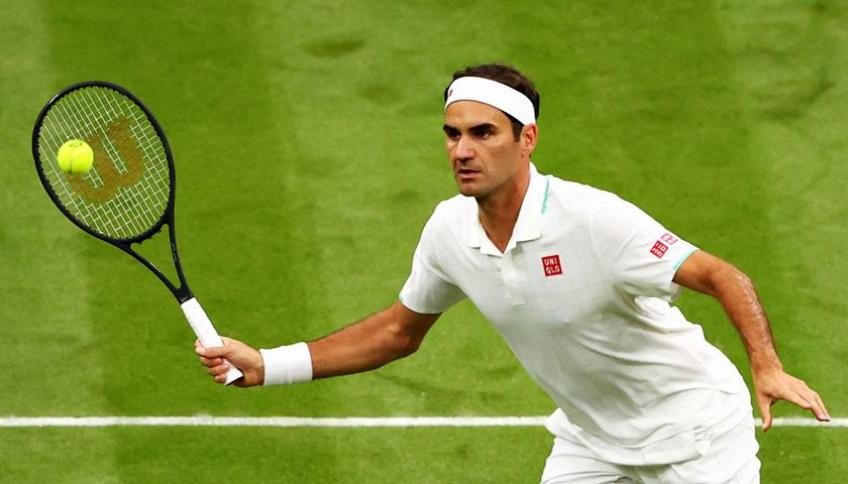

Roger Federer
Possibly the greatest tennis player of all times
-Rafael Nadal

Federer at the Wimbledon tournament in 2018
Here's a quick time line of Federer's career:
- 1981 - Born 8 August 1981 in Basel, Switzerland
- 1992 - He served as a ball boy at his hometown Basel tournament
- 2008 - Won the gold medal in doubles with Stan Wawrinka
- 2009 - Married Miroslava Federer
- 2012 - Won the silver medal at the summer Olympics against del Potro, but lost to Murray.
- 2021 - Withdrew from form Australia Open due to still recovering knee injury. Withdrew from the French Open before the fourth match due to his knee injury.
For mor info about this incredible player read:
Roger Federer